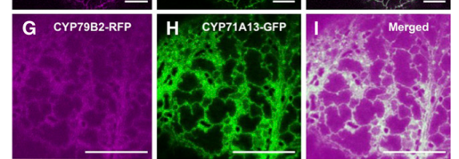

CYP79B2 (At4g39950) is an endoplasmic reticulum-anchored cytochrome P450 monooxygenase (tryptophan N-monooxygenase, EC 1.14.14.156) that converts L-tryptophan to indole-3-acetaldoxime (IAOx) using O2 and electrons supplied by NADPH-cytochrome P450 reductase. IAOx is a metabolic branch point: it is the precursor of indole glucosinolates (via CYP83B1), of the phytoalexin camalexin (via CYP71A12/A13 and CYP71B15/PAD3), of 4-hydroxyindole-3-carbonyl nitrile and other indole-cyanogenic defense metabolites, and of a minor tryptophan-dependent route to indole-3-acetic acid. CYP79B2 acts redundantly with its paralog CYP79B3; the double mutant lacks camalexin and indole glucosinolates and has modestly reduced auxin. CYP79B2 is expressed in most tissues (highest in roots), is wound- and pathogen-inducible, and associates with downstream camalexin P450s in an ER-surface metabolon. Through its products it is required for resistance to fungal, oomycete and bacterial pathogens, for flg22-induced callose deposition, and for rhizobacterium-induced systemic resistance.
| GO Term | Evidence | Action | Reason |
|---|---|---|---|
|
GO:0002229
defense response to oomycetes
|
IGI
PMID:20230487 Disease resistance of Arabidopsis to Phytophthora brassicae ... |
KEEP AS NON CORE |
Summary: The cyp79B2 cyp79B3 double mutant, which lacks IAOx and hence all IAOx-derived metabolites (indole glucosinolates and camalexin), is highly susceptible to the oomycete Phytophthora brassicae, whereas single pathway-branch mutants have only minor effects.
Reason: Sound genetic evidence (IGI with CYP79B3) that CYP79B2/B3-derived indolic metabolites are needed for resistance to P. brassicae. CYP79B2 acts upstream by supplying the precursor IAOx; the antimicrobial work is done by downstream products (indole glucosinolate hydrolysis products and camalexin). Retain as a non-core, upstream physiological consequence of its catalytic role.
Supporting Evidence:
PMID:20230487
In contrast, the double mutant cyp79B2 cyp79B3, which has a blockage in the production of indole-3-aldoxime (IAOx), the common precursor of tryptophan-derived metabolites including camalexin and iGS, is highly susceptible to P. brassicae.
|
|
GO:0004497
monooxygenase activity
|
IEA
GO_REF:0000120 |
KEEP AS NON CORE |
Summary: Generic monooxygenase activity from InterPro/ARBA mapping of the cytochrome P450 domain.
Reason: Correct but uninformative parent of the experimentally established tryptophan N-monooxygenase activity (GO:0090489), which captures the core activity. Retained as a true but non-core general term, consistent with the treatment of paralogous CYP79F1.
Supporting Evidence:
PMID:10922360
Heterologous expression of CYP79B2 in Escherichia coli shows that CYP79B2 catalyzes the conversion of tryptophan to indole-3-acetaldoxime.
|
|
GO:0005506
iron ion binding
|
IEA
GO_REF:0000002 |
KEEP AS NON CORE |
Summary: Iron ion binding inferred from P450 domain signatures; the heme iron is coordinated by the conserved Cys477 thiolate.
Reason: CYP79B2 is a heme-thiolate P450; the iron is bound as part of the heme prosthetic group (C477A abolishes activity per UniProt). The term is correct as a cofactor description but is not the core function.
Supporting Evidence:
file:ARATH/CYP79B2/CYP79B2-deep-research-falcon.md
The reaction required an NADPH–cytochrome-P450-reductase electron-transfer system in the reconstituted assays.
|
|
GO:0005783
endoplasmic reticulum
|
IBA
GO_REF:0000033 |
ACCEPT |
Summary: ER localization propagated across the CYP79/CYP71 clan P450 node; consistent with an N-terminal signal-anchor and with ER-like localization of CYP79B2-RFP colocalizing with ER-resident CYP71A13 in N. benthamiana.
Reason: Plant A-type P450s are ER-anchored; the PAINT node placement is sound and is supported by direct colocalization data for CYP79B2 within the ER-associated camalexin metabolon (Mucha et al. 2019).
Supporting Evidence:
file:ARATH/CYP79B2/CYP79B2-deep-research-falcon.md
CYP79B2–RFP displayed an ER-like reticulate pattern and colocalized with ER-localized CYP71A13–GFP
PMID:31511315
We detected increased substrate affinity of CYP79B2 in the presence of CYP71A13, indicating an allosteric interaction.
|
|
GO:0006569
L-tryptophan catabolic process
|
IDA
PMID:10681464 Arabidopsis cytochrome P450s that catalyze the first step of... |
ACCEPT |
Summary: Recombinant CYP79B2 converts L-tryptophan to indole-3-acetaldoxime, a reaction that consumes tryptophan.
Reason: Conversion of Trp to IAOx is a catalytic step that removes tryptophan into secondary/hormone metabolism, so CYP79B2 directly executes a step of tryptophan catabolism as broadly defined. The more informative processes are indole glucosinolate and camalexin biosynthesis, but this term is not wrong.
Supporting Evidence:
PMID:10681464
We have identified two Arabidopsis cytochrome P450s (CYP79B2 and CYP79B3) that can convert Trp to indole-3-acetaldoxime (IAOx), a precursor to IAA and indole glucosinolates.
PMID:10922360
Heterologous expression of CYP79B2 in Escherichia coli shows that CYP79B2 catalyzes the conversion of tryptophan to indole-3-acetaldoxime.
|
|
GO:0006952
defense response
|
IEP
PMID:31568832 Translational Regulation of Metabolic Dynamics during Effect... |
KEEP AS NON CORE |
Summary: CYP79B2 is strongly induced at transcriptional and translational levels during RPS2-mediated effector-triggered immunity, and a cyp79B2 mutant shows reduced cell death.
Reason: Expression evidence (plus a supporting mutant phenotype) linking CYP79B2 to defense; its contribution is through synthesis of camalexin precursor. Very general term; retained as non-core.
Supporting Evidence:
PMID:31568832
through the dramatic increases in both RS and RF (66 fold) of the key camalexin biosynthetic enzyme, tryptophan N-monooxygenase, CYP79B2
PMID:31568832
Indeed, the cyp79B2 mutant showed reduced PCD, indicating the importance of camalexin biosynthesis in this RPS2-mediated response (Figure S7C).
|
|
GO:0006952
defense response
|
IMP
PMID:20023151 Tryptophan-derived metabolites are required for antifungal d... |
KEEP AS NON CORE |
Summary: Epistasis analysis with cyp79B2 cyp79B3 shows that indolic metabolites are required for mlo2-conditioned antifungal defense against powdery mildew and Botrytis.
Reason: Genetic necessity of CYP79B2/B3-derived metabolites for antifungal defense; CYP79B2 acts upstream by producing IAOx. Retained as non-core; the core contribution is the biosynthetic step.
Supporting Evidence:
PMID:20023151
Results of genetic epistasis analysis suggest a decisive role for indolic metabolites in mlo2-conditioned antifungal defense against both biotrophic powdery mildews and a camalexin-sensitive strain of the necrotrophic fungus Botrytis cinerea.
|
|
GO:0006952
defense response
|
NAS
PMID:31511315 The Formation of a Camalexin Biosynthetic Metabolon. |
KEEP AS NON CORE |
Summary: ComplexPortal statement that the camalexin metabolon (including CYP79B2) functions in defense.
Reason: Camalexin is an antifungal phytoalexin, so the metabolon is defense-related, but the specific contribution of CYP79B2 is captured by camalexin biosynthetic process. Retained as a non-core general term.
Supporting Evidence:
PMID:31511315
Arabidopsis (Arabidopsis thaliana) efficiently synthesizes the antifungal phytoalexin camalexin without the apparent release of bioactive intermediates
|
|
GO:0009414
response to water deprivation
|
IEP
PMID:23144921 Water stress and aphid feeding differentially influence meta... |
MARK AS OVER ANNOTATED |
Summary: CYP79B2 transcript decreased under drought stress in a single expression study.
Reason: A single transcript change under drought does not indicate that CYP79B2 has a role in the response to water deprivation; no functional evidence links the enzyme to drought tolerance. Treated as over-annotation, consistent with the same row on CYP71B15/PAD3.
Supporting Evidence:
PMID:23144921
Transcript levels of the camalexin biosynthetic genes CYP79B2 and PAD3 were down-regulated by drought stress, resulting in less camalexin in plants under drought conditions than in plants under excessive water.
|
|
GO:0009507
chloroplast
|
ISM
GO_REF:0000122 |
REMOVE |
Summary: Chloroplast localization predicted by AtSubP sequence analysis.
Reason: CYP79B2 is an N-terminally anchored ER P450 (signal-anchor TM 21-41) that colocalizes with ER-resident CYP71A13; there is no experimental support for plastid targeting. The prediction is a common mis-call for P450 N-terminal anchors.
Supporting Evidence:
file:ARATH/CYP79B2/CYP79B2-deep-research-falcon.md
The early chloroplast assignment was sequence-based prediction only.
file:ARATH/CYP79B2/CYP79B2-deep-research-falcon.md
CYP79B2–RFP displayed an ER-like reticulate pattern and colocalized with ER-localized CYP71A13–GFP
|
|
GO:0009617
response to bacterium
|
IEP
PMID:17573535 Arabidopsis cytochrome P450 monooxygenase 71A13 catalyzes th... |
KEEP AS NON CORE |
Summary: CYP79B2 expression responds to Pseudomonas syringae infection in the context of camalexin pathway induction (Nafisi et al. 2007).
Reason: The cached record is abstract-only; the curator presumably saw expression data in the full text. CYP79B2 induction by bacteria is consistent with its role supplying IAOx for camalexin. Retained as non-core.
Supporting Evidence:
PMID:17573535
It is produced from Trp, which is converted to indole acetaldoxime (IAOx) by the action of cytochrome P450 monooxygenases CYP79B2 and CYP79B3.
|
|
GO:0009617
response to bacterium
|
IMP
PMID:23073694 Metabolic and transcriptomic changes induced in Arabidopsis ... |
KEEP AS NON CORE |
Summary: cyp79B2 cyp79B3 mutants fail to mount Pseudomonas fluorescens SS101-induced resistance against Pst.
Reason: Genetic requirement for IAOx-derived metabolites in a rhizobacterium-induced response; CYP79B2 acts upstream as a biosynthetic enzyme. Non-core.
Supporting Evidence:
PMID:23073694
Subsequent bioassays with seven Arabidopsis mutants ( myb51 , cyp79B2cyp79B3 , cyp81F2 , pen2 , cyp71A12 , cyp71A13 , and myb28myb29 ) disrupted in the biosynthesis pathways for these plant secondary metabolites showed that camalexin and glucosinolates are indeed required for the induction of Pst resistance by Pf .SS101 .
|
|
GO:0009625
response to insect
|
IEP
PMID:23144921 Water stress and aphid feeding differentially influence meta... |
KEEP AS NON CORE |
Summary: Aphid (Myzus persicae) feeding increased CYP79B2 transcripts together with camalexin accumulation.
Reason: Expression-based response; indole glucosinolates produced downstream of CYP79B2 are established anti-herbivore metabolites, so the response is biologically plausible but non-core.
Supporting Evidence:
PMID:23144921
persicae, increased expression of CYP79B2, CYP79B3, and PAD3 resulting in a 50 to 100-fold increase in the concentration of camalexin
|
|
GO:0009682
induced systemic resistance
|
IBA
GO_REF:0000033 |
KEEP AS NON CORE |
Summary: Induced systemic resistance propagated at a narrow CYP79B node (PTN008612649) containing CYP79B2 and CYP79B3.
Reason: The node is the CYP79B subfamily and its experimental grounding is the CYP79B2/CYP79B3 mutant data (PMID:23073694); the target appearing among the sources is expected. The term reflects an upstream requirement for IAOx-derived defense metabolites rather than the enzymatic function, so it is kept as non-core.
Supporting Evidence:
PMID:23073694
Subsequent bioassays with seven Arabidopsis mutants ( myb51 , cyp79B2cyp79B3 , cyp81F2 , pen2 , cyp71A12 , cyp71A13 , and myb28myb29 ) disrupted in the biosynthesis pathways for these plant secondary metabolites showed that camalexin and glucosinolates are indeed required for the induction of Pst resistance by Pf .SS101 .
|
|
GO:0009682
induced systemic resistance
|
IMP
PMID:23073694 Metabolic and transcriptomic changes induced in Arabidopsis ... |
KEEP AS NON CORE |
Summary: Rhizobacterium (P. fluorescens SS101)-induced systemic resistance to Pst requires CYP79B2/B3-dependent camalexin and glucosinolates.
Reason: Experimental support for necessity of CYP79B2/B3 products in ISR; the enzyme acts upstream by producing IAOx. Non-core.
Supporting Evidence:
PMID:23073694
Subsequent bioassays with seven Arabidopsis mutants ( myb51 , cyp79B2cyp79B3 , cyp81F2 , pen2 , cyp71A12 , cyp71A13 , and myb28myb29 ) disrupted in the biosynthesis pathways for these plant secondary metabolites showed that camalexin and glucosinolates are indeed required for the induction of Pst resistance by Pf .SS101 .
|
|
GO:0009684
indoleacetic acid biosynthetic process
|
IMP
PMID:15772288 Sites and regulation of auxin biosynthesis in Arabidopsis ro... |
KEEP AS NON CORE |
Summary: IAA synthesis rate is reduced in roots of the cyp79B2 cyp79B3 double mutant; both genes are expressed at sites of high IAA synthesis.
Reason: CYP79B2 makes IAOx, which can be converted to IAA via IAN, so it does catalyse an early step of one (minor, Brassicales-specific) Trp-dependent IAA route. Its contribution is conditional and quantitatively small relative to the TAA1/YUCCA pathway, so the term is retained as non-core.
Supporting Evidence:
PMID:15772288
Root-localized IAA synthesis was diminished in a cyp79B2 cyp79B3 double knockout, suggesting an important role for Trp-dependent IAA synthesis pathways in the root.
PMID:12464638
Conversely, cyp79B2 cyp79B3 double mutants have reduced levels of IAA and show growth defects consistent with partial auxin deficiency.
|
|
GO:0010120
camalexin biosynthetic process
|
NAS
PMID:31511315 The Formation of a Camalexin Biosynthetic Metabolon. |
ACCEPT |
Summary: CYP79B2 is a member of the camalexin biosynthetic metabolon and catalyses its first step (Trp to IAOx).
Reason: CYP79B2 catalyses the first step of camalexin biosynthesis; the cyp79B2 cyp79B3 double mutant is devoid of camalexin and labeled IAOx is incorporated into camalexin. CYP79B2 physically associates with downstream CYP71A13/CYP71B15. This is a direct catalytic participation, not mere necessity.
Supporting Evidence:
PMID:15148388
We show that camalexin, the indole phytoalexin of Arabidopsis thaliana, is synthesized from tryptophan via indole-3-acetaldoxime (IAOx) in a reaction catalyzed by CYP79B2 and CYP79B3.
PMID:31511315
We detected increased substrate affinity of CYP79B2 in the presence of CYP71A13, indicating an allosteric interaction.
|
|
GO:0010120
camalexin biosynthetic process
|
TAS
PMID:16167893 Secondary metabolites influence Arabidopsis/Botrytis interac... |
ACCEPT |
Summary: Traceable author statement on camalexin production by CYP79B2-dependent pathway in Arabidopsis/Botrytis interactions.
Reason: The cited paper (abstract-only in cache) uses camalexin-deficient genotypes; the underlying claim that CYP79B2 catalyses the first step of camalexin biosynthesis is well established (Glawischnig et al. 2004).
Supporting Evidence:
PMID:16167893
Botrytis cinerea isolates showed differing sensitivity to purified camalexin, and camalexin-sensitive isolates produced larger lesions on camalexin-deficient Arabidopsis genotypes than on the wild type.
PMID:15148388
We show that camalexin, the indole phytoalexin of Arabidopsis thaliana, is synthesized from tryptophan via indole-3-acetaldoxime (IAOx) in a reaction catalyzed by CYP79B2 and CYP79B3.
|
|
GO:0016020
membrane
|
IBA
GO_REF:0000033 |
MODIFY |
Summary: Membrane localization propagated at the P450 node.
Reason: CYP79B2 is a single-pass, signal-anchored membrane protein, so the term is correct, but the experimentally supported membrane is the ER (CYP79B2-RFP colocalizes with ER-resident CYP71A13); endoplasmic reticulum membrane is the precise term, consistent with the ER IBA from the same node.
Propagation Review
Root cause:
NO FAILURE CORE
Sources checked:
PANTHER:PTN001210282
· PTN001210282
SUPPORTS TRANSFER
Membrane anchoring is conserved across this P450 node and CYP79B2 is inside the clade; the MODIFY only sharpens the term to ER membrane, it does not dispute the transfer.
Proposed replacements:
endoplasmic reticulum membrane
Supporting Evidence:
file:ARATH/CYP79B2/CYP79B2-deep-research-falcon.md
CYP79B2–RFP displayed an ER-like reticulate pattern and colocalized with ER-localized CYP71A13–GFP
|
|
GO:0016020
membrane
|
IEA
GO_REF:0000044 |
MODIFY |
Summary: Membrane from UniProt subcellular location (single-pass membrane protein).
Reason: Correct but non-specific; the experimentally supported location is the ER (CYP79B2-RFP colocalizes with ER-resident CYP71A13), so endoplasmic reticulum membrane is the appropriate term.
Proposed replacements:
endoplasmic reticulum membrane
Supporting Evidence:
file:ARATH/CYP79B2/CYP79B2-deep-research-falcon.md
CYP79B2–RFP displayed an ER-like reticulate pattern and colocalized with ER-localized CYP71A13–GFP
|
|
GO:0016020
membrane
|
NAS
PMID:31511315 The Formation of a Camalexin Biosynthetic Metabolon. |
MODIFY |
Summary: ComplexPortal: the camalexin metabolon assembles on membranes.
Reason: The metabolon assembles at the ER surface; endoplasmic reticulum membrane is the more precise location for CYP79B2.
Proposed replacements:
endoplasmic reticulum membrane
Supporting Evidence:
file:ARATH/CYP79B2/CYP79B2-deep-research-falcon.md
CYP79B2–RFP displayed an ER-like reticulate pattern and colocalized with ER-localized CYP71A13–GFP
|
|
GO:0016705
oxidoreductase activity, acting on paired donors, with incorporation or reduction of molecular oxygen
|
IEA
GO_REF:0000120 |
KEEP AS NON CORE |
Summary: General paired-donor oxygenase term from P450 domain mapping.
Reason: True ancestor of tryptophan N-monooxygenase activity (GO:0090489) but uninformative; retained as non-core.
Supporting Evidence:
PMID:10922360
Heterologous expression of CYP79B2 in Escherichia coli shows that CYP79B2 catalyzes the conversion of tryptophan to indole-3-acetaldoxime.
|
|
GO:0016709
oxidoreductase activity, acting on paired donors, with incorporation or reduction of molecular oxygen, NAD(P)H as one donor, and incorporation of one atom of oxygen
|
IBA
GO_REF:0000033 |
MODIFY |
Summary: Paired-donor monooxygenase with NAD(P)H as one donor, propagated at the P450 node PTN001210282.
Reason: The general P450 monooxygenase function at this node is sound, but microsomal P450s such as CYP79B2 receive electrons from NADPH via NADPH-cytochrome P450 reductase (a flavoprotein); the Rhea reaction (RHEA:33279) uses reduced [NADPH--hemoprotein reductase]. In GO, tryptophan N-monooxygenase activity is_a GO:0016712 (reduced flavin or flavoprotein as one donor), not GO:0016709. Replace with GO:0016712, as done for paralogous CYP79F1.
Propagation Review
Root cause:
TERM SCOPING PROBLEM
Sources checked:
PANTHER:PTN001210282
· PTN001210282
SUPPORTS TRANSFER
The P450 monooxygenase function at this node is sound and CYP79B2 is inside the clade; only the electron-donor branch of the asserted term (NAD(P)H rather than flavoprotein reductase) is mis-scoped for microsomal P450s.
Proposed replacements:
oxidoreductase activity, acting on paired donors, with incorporation or reduction of molecular oxygen, reduced flavin or flavoprotein as one donor, and incorporation of one atom of oxygen
Supporting Evidence:
file:ARATH/CYP79B2/CYP79B2-deep-research-falcon.md
The reaction required an NADPH–cytochrome-P450-reductase electron-transfer system in the reconstituted assays.
file:ARATH/CYP79B2/CYP79B2-uniprot.txt
Reaction=L-tryptophan + 2 reduced [NADPH--hemoprotein reductase] + 2 O2
|
|
GO:0020037
heme binding
|
IEA
GO_REF:0000002 |
KEEP AS NON CORE |
Summary: Heme binding from P450 domain signatures.
Reason: CYP79B2 is a heme-thiolate P450 (Cys477 axial ligand; C477A abolishes activity). The cofactor-binding term is correct but not the core function.
Supporting Evidence:
file:ARATH/CYP79B2/CYP79B2-deep-research-falcon.md
The reaction required an NADPH–cytochrome-P450-reductase electron-transfer system in the reconstituted assays.
|
|
GO:0042742
defense response to bacterium
|
IMP
PMID:19095898 Glucosinolate metabolites required for an Arabidopsis innate... |
KEEP AS NON CORE |
Summary: cyp79B2 cyp79B3 plants, lacking indole glucosinolates, are impaired in flg22-induced callose and in glucosinolate-dependent restriction of bacterial growth (Clay et al. 2009).
Reason: Genetic necessity of CYP79B2/B3 for an antibacterial response mediated by indole glucosinolate breakdown products (CYP81F2/PEN2 pathway). CYP79B2 acts upstream as the first biosynthetic enzyme. Non-core.
Supporting Evidence:
PMID:19095898
The IGS biosynthetic double mutant cyp79B2 cyp79B3, which completely lacks IGS (21), as well as mutants atr4-1/cyp83B1 and ugt74B1-2, were impaired in the induction of the callose response
|
|
GO:0044272
sulfur compound biosynthetic process
|
IEA
GO_REF:0000117 |
MODIFY |
Summary: Sulfur compound biosynthetic process from an ARBA rule, reflecting the CYP79 role in glucosinolate synthesis.
Reason: CYP79B2 catalyses the first committed step of indole glucosinolate biosynthesis (Trp to IAOx; the double mutant completely lacks indole glucosinolates, and overexpression raises them). The specific term is indole glucosinolate biosynthetic process, which is_a sulfur compound biosynthetic process. Comparator check: the next enzyme, CYP83B1, carries GO:0009759 (IDA), so the term is applied to the catalysing enzymes of this pathway.
Proposed replacements:
indole glucosinolate biosynthetic process
Supporting Evidence:
PMID:10922360
Arabidopsis overexpressing CYP79B2 has increased levels of indole glucosinolates, which strongly indicates that CYP79B2 is involved in indole glucosinolate biosynthesis.
PMID:15148388
These results demonstrate that only CYP79B2 and CYP79B3 contribute significantly to the IAOx pool from which camalexin and indole glucosinolates are synthesized.
|
|
GO:0052544
defense response by callose deposition in cell wall
|
IMP
PMID:19095898 Glucosinolate metabolites required for an Arabidopsis innate... |
KEEP AS NON CORE |
Summary: The cyp79B2 cyp79B3 double mutant is impaired in flg22-induced callose deposition.
Reason: CYP79B2 does not deposit callose; it supplies IAOx for indole glucosinolate synthesis, whose 4-methoxy derivative is hydrolysed by PEN2 to signal callose deposition. The requirement is genuine but indirect and context-dependent (Schlaeppi et al. 2010 found wild-type-like callose in cyp79B2 cyp79B3 challenged with P. brassicae). Kept as a non-core upstream annotation.
Supporting Evidence:
PMID:19095898
The IGS biosynthetic double mutant cyp79B2 cyp79B3, which completely lacks IGS (21), as well as mutants atr4-1/cyp83B1 and ugt74B1-2, were impaired in the induction of the callose response
PMID:20230487
we concluded that the lack of IAOx-derived compounds renders Arabidopsis susceptible despite wild-type-like pathogen-induced hypersensitive cell death, stress hormone signaling and callose deposition
|
|
GO:0090489
tryptophan N-monooxygenase activity
|
EXP
PMID:10681464 Arabidopsis cytochrome P450s that catalyze the first step of... |
ACCEPT |
Summary: Recombinant CYP79B2 converts L-tryptophan to indole-3-acetaldoxime (EC 1.14.14.156); confirmed independently by Mikkelsen et al. 2000 (Km 21 uM).
Reason: This is the defining catalytic activity of CYP79B2, demonstrated by two independent heterologous expression studies, with no oxime formation from Phe or Tyr.
Supporting Evidence:
PMID:10681464
We have identified two Arabidopsis cytochrome P450s (CYP79B2 and CYP79B3) that can convert Trp to indole-3-acetaldoxime (IAOx), a precursor to IAA and indole glucosinolates.
PMID:10922360
Heterologous expression of CYP79B2 in Escherichia coli shows that CYP79B2 catalyzes the conversion of tryptophan to indole-3-acetaldoxime.
|
|
GO:0090489
tryptophan N-monooxygenase activity
|
IEA
GO_REF:0000120 |
ACCEPT |
Summary: Tryptophan N-monooxygenase activity from Rhea/EC mapping.
Reason: Consistent with the experimentally established activity.
Supporting Evidence:
PMID:10922360
Heterologous expression of CYP79B2 in Escherichia coli shows that CYP79B2 catalyzes the conversion of tryptophan to indole-3-acetaldoxime.
|
|
GO:1902494
catalytic complex
|
NAS
PMID:31511315 The Formation of a Camalexin Biosynthetic Metabolon. |
KEEP AS NON CORE |
Summary: ComplexPortal camalexin metabolon (CPX-2833) includes CYP79B2 with CYP71A13, CYP71B15, ATR1 and GSTU4.
Reason: Co-IP and FRET-FLIM support association of CYP79B2 with the downstream camalexin P450s, and CYP71A13 increases the substrate affinity of CYP79B2. The metabolon is a transient enzyme assembly; catalytic complex is a generic term. Retained as non-core.
Supporting Evidence:
PMID:31511315
determined that the camalexin biosynthetic P450 enzymes copurified with these enzymes.
PMID:31511315
We detected increased substrate affinity of CYP79B2 in the presence of CYP71A13, indicating an allosteric interaction.
|
Q: Should GO annotate the minor IAOx-dependent IAA route (CYP79B2 -> IAOx -> IAN -> IAA) with a more specific process term, or is indoleacetic acid biosynthetic process adequate given its conditional, Brassicales-restricted contribution?
Q: Several defense-response rows (callose deposition, induced systemic resistance, defense response to oomycetes) rest on cyp79B2 cyp79B3 double-mutant necessity data. Should these remain on the biosynthetic enzyme, or would they be better expressed through the downstream effector enzymes (PEN2, CYP81F2, PAD3) whose products do the defensive work?
Q: Is there evidence for a CYP79B2-specific (versus CYP79B3) role, for example in pathogen-induced camalexin synthesis where CYP79B2 but not CYP79B3 is transcriptionally induced?
Experiment: Compare camalexin and indole glucosinolate profiles in cyp79b2 and cyp79b3 single mutants after pathogen challenge to quantify paralog-specific contributions to the shared IAOx pool.
Experiment: Use in planta proximity labelling to test whether CYP79B2 also associates with CYP83B1 in an indole glucosinolate metabolon distinct from the camalexin metabolon.
The research report should be a detailed narrative explaining the function, biological processes, and localization of the gene product. Citations should be given for all claims.
You should prioritize authoritative reviews and primary scientific literature when conducting research. You can supplement
this with annotations you find in gene/protein databases, but these can be outdated or inaccurate.
We are specifically interested in the primary function of the gene - for enzymes, what reaction is catalyzed, and what is the substrate specificity? For transporters, what is the substrate? For structural proteins or adapters, what is the broader structural role? For signaling molecules, what is the role in the pathway.
We are interested in where in or outside the cell the gene product carries out its function.
We are also interested in the signaling or biochemical pathways in which the gene functions. We are less interested in broad pleiotropic effects, except where these elucidate the precise role.
Include evidence where possible. We are interested in both experimental evidence as well as inference from structure, evolution, or bioinformatic analysis. Precise studies should be prioritized over high-throughput, where available.
CYP79B2 (At4g39950; UniProt O81346) is the Arabidopsis thaliana CYP79-family cytochrome P450 specified in the question, not its closely related paralog CYP79B3 (At2g22330). The locus assignments are independently listed in a published CYP79-family comparison; primary studies identify the Arabidopsis CYP79B2 protein as a P450 and report approximately 85% amino-acid identity with CYP79B3. Its P450-family assignment agrees with the Cyt_P450 domains in the supplied UniProt record. The accession O81346 is taken from that record rather than independently established by the cited experiments. (mikkelsen2000cytochromep450cyp79b2 pages 3-4, wang2020characterizationofarabidopsis pages 9-10)
The experimentally established reaction is conversion of L-tryptophan to indole-3-acetaldoxime (IAOx). CYP79B2 is therefore an entry-point enzyme for tryptophan-derived indole metabolism, rather than an enzyme that directly synthesizes a glucosinolate, camalexin, or the auxin indole-3-acetic acid (IAA). Independent recombinant-expression studies identified the product, including by comparison with authentic IAOx and GC–MS. Among the aromatic amino acids tested, recombinant CYP79B2 produced no detectable oxime from phenylalanine or tyrosine. The reaction required an NADPH–cytochrome-P450-reductase electron-transfer system in the reconstituted assays. (hull2000arabidopsiscytochromep450s pages 1-1, mikkelsen2000cytochromep450cyp79b2 pages 3-4, mikkelsen2000cytochromep450cyp79b2 pages 4-5)
Mikkelsen and colleagues reported an apparent tryptophan Kₘ of 21 µM and a Vₘₐₓ of 7.78 nmol h⁻¹ ml⁻¹ culture for recombinant CYP79B2. The latter is normalized to expression-culture volume, not purified-enzyme mass. A later CYP79 comparison explicitly lists 21 µM for CYP79B2/At4g39950; this is important because searchable text extracted from the original PDF renders the micro sign incorrectly as “m.” (mikkelsen2000cytochromep450cyp79b2 pages 3-4, wang2020characterizationofarabidopsis pages 9-10)
The following evidence summary separates the direct annotation from downstream and context-dependent effects. (mikkelsen2000cytochromep450cyp79b2 pages 3-4, mucha2019theformationof pages 5-6, lehmann2017arabidopsisnitrilase1 pages 1-2)
| Annotation | Direct evidence | Scope / caveat |
|---|---|---|
| Identity — high confidence: Arabidopsis thaliana CYP79B2 is At4g39950; CYP79B3 is the distinct paralog At2g22330. | A CYP79-family comparison assigns CYP79B2 to At4g39950 and CYP79B3 to At2g22330; the proteins share 85% amino-acid identity but are separate gene products. (mikkelsen2000cytochromep450cyp79b2 pages 3-4, wang2020characterizationofarabidopsis pages 9-10) | UniProt O81346 maps to the requested CYP79B2 protein. Double-mutant results cannot resolve the individual contributions of CYP79B2 and CYP79B3. |
| Primary catalytic function — high confidence: CYP79B2 converts L-tryptophan to indole-3-acetaldoxime (IAOx) as a membrane-associated, NADPH–P450-reductase-dependent monooxygenase. | Recombinant CYP79B2 produced GC–MS-verified IAOx but no detectable oximes from phenylalanine or tyrosine. The apparent Kₘ is 21 µM and Vₘₐₓ is 7.78 nmol h⁻¹ ml⁻¹ culture; activity required added NADPH–cytochrome-P450 reductase. (mikkelsen2000cytochromep450cyp79b2 pages 3-4, mikkelsen2000cytochromep450cyp79b2 pages 4-5, wang2020characterizationofarabidopsis pages 9-10) | Vₘₐₓ is normalized to culture volume rather than purified-enzyme mass. The later CYP79-family table verifies the 21-µM unit; some text extractions incorrectly render it as mM. |
| Pathway branch point — high confidence: IAOx supplies indole-glucosinolate and induced camalexin or other indole-defense metabolism; its contribution to auxin is conditional. | CYP83B1 N-hydroxylates IAOx to a reactive intermediate that forms thiol adducts en route to indole glucosinolates. CYP71A12/A13 channel IAOx-derived flux toward camalexin metabolism and associate with CYP79B2 in an ER-associated complex. TAA1/TAR–YUCCA is the predominant general IAA pathway; cyp79b2 cyp79b3 has near-wild-type IAA under standard conditions but modestly reduced IAA at 26°C, and it suppresses the IAOx-dependent high-auxin rooty phenotype. (mucha2019theformationof pages 5-6, casanovasaez2021auxinmetabolismin pages 4-5, lehmann2017arabidopsisnitrilase1 pages 1-2, brumos2020structure–functionanalysisof pages 1-4, bak2001cyp83b1acytochrome pages 2-3) | CYP79B2 directly makes IAOx, not glucosinolates, camalexin or IAA. The enzymes completing IAOx-to-IAA conversion remain incompletely resolved; CYP79B2 is not the principal general IAA-biosynthetic enzyme. |
| Subcellular site — moderate-to-high confidence: CYP79B2 is an ER-associated membrane P450, with its catalytic domain expected on the cytosolic face. | In Nicotiana benthamiana, CYP79B2–RFP displayed an ER-like reticulate pattern and colocalized with ER-localized CYP71A13–GFP in Figure 6G–I. Microscopy, FRET-FLIM and microsomal interaction data support an ER-surface camalexin metabolon. (mucha2019theformationof pages 5-6, mucha2019theformationof pages 5-5, mucha2019theformationof media af821672, mucha2019theformationof pages 6-7) | Evidence uses transient heterologous expression, and CYP79B2 fluorescence was weak. The early chloroplast assignment was sequence-based prediction only. CYP79B2 does not reside within ER bodies; that localization applies to downstream myrosinases such as PYK10/BGLU21. |
| Current physiological evidence — moderate confidence: CYP79B2/B3-dependent tryptophan metabolism supports root-microbiome homeostasis and pathogen resistance. | In 2024, cyp79b2 cyp79b3 altered rhizoplane or endosphere communities and root-exudate effects, while most tested fungal endophytes severely restricted mutant growth. Separately, cyp79b2 cyp79b3 fully abolished mkp1-1 enhanced resistance to Plectosphaerella cucumerina and compromised resistance to Pseudomonas syringae. (basak2024erbodyresidentmyrosinases pages 1-2, berlanga2024mitogenactivatedproteinkinase pages 1-2) | These double-mutant, pathway-level phenotypes may reflect loss of several IAOx-derived metabolites rather than CYP79B2 alone or one specific product. They establish biological relevance but do not change the primary catalytic annotation. |
Table: Five-row evidence synthesis for Arabidopsis CYP79B2 (At4g39950), covering identity, catalytic function, pathway placement, localization and recent physiological findings. Caveats distinguish direct CYP79B2 activity from downstream pathways and ER-body biology.
Indole glucosinolates: strong physiological evidence. IAOx enters the indole-glucosinolate branch through CYP83B1, a different P450 that converts IAOx into a reactive intermediate capable of forming thiol adducts on the route to glucosinolates. CYP79B2 overexpression in Arabidopsis increased the indole glucosinolates glucobrassicin approximately fivefold and 4-methoxyglucobrassicin approximately twofold, without a comparable increase in non-indole glucosinolates. These biochemical and transgenic results directly support CYP79B2’s role in supplying this branch; they do not assign CYP83B1’s reaction to CYP79B2. (mikkelsen2000cytochromep450cyp79b2 pages 5-6, bak2001cyp83b1acytochrome pages 2-3, bak2001cyp83b1acytochrome pages 1-2)
Camalexin and other induced indole defenses: upstream precursor supply. CYP71A12/CYP71A13-associated metabolism draws on IAOx-derived intermediates for pathogen-induced camalexin biosynthesis. An experimental study found CYP79B2 in the camalexin-enzyme interaction network: fluorescence-proximity measurements supported association with downstream P450s, and coexpression with CYP71A13 in yeast microsomes increased apparent tryptophan affinity and shifted products toward indole-3-acetonitrile. The authors interpreted CYP79B2 as a relatively loosely associated branch-point component, not an enzyme dedicated exclusively to camalexin. A 2023 review also places its IAOx product upstream of the distinct 4-hydroxyindole-3-carbonyl-nitrile defense branch; CYP79B2 itself is not assigned those downstream reactions. (mucha2019theformationof pages 5-6, mucha2019theformationof pages 3-4, boter2023cyanogenesisaplant pages 4-6, mucha2019theformationof pages 1-2)
Auxin: a conditional contribution, not the main general route. IAOx can contribute to IAA-associated metabolism, particularly when flux through competing glucosinolate steps is disrupted or under certain environmental conditions. For example, blocking CYP79B2/CYP79B3-dependent precursor production suppresses the high-auxin phenotype of the glucosinolate-pathway rooty mutant. Conversely, a study of cyp79b2 cyp79b3 found approximately wild-type IAA under standard growth conditions but a modest reduction in free IAA at 26 °C. Authoritative auxin-metabolism synthesis identifies TAA1/TAR → indole-3-pyruvic acid → YUCCA → IAA as the major broadly conserved route. The exact enzymes and quantitative flux completing the IAOx-to-IAA route in ordinary plants remain incompletely resolved. Thus, annotating CYP79B2 simply as an “auxin-synthesis enzyme” would obscure its more securely established IAOx-producing, defense-metabolism role. (casanovasaez2021auxinmetabolismin pages 4-5, lehmann2017arabidopsisnitrilase1 pages 1-2, brumos2020structure–functionanalysisof pages 1-4, casanovasaez2021auxinmetabolismin pages 2-4)
Subcellular location: predominantly supported as an ER-associated membrane P450. In a 2019 microscopy experiment, transiently expressed CYP79B2–RFP showed an endoplasmic-reticulum-associated signal and colocalized with ER-localized CYP71A13–GFP; microsomal interaction studies support an ER-surface camalexin-enzyme complex. CYP79B2 fluorescence was comparatively weak, and this experiment used heterologous Nicotiana benthamiana leaves, so it should not be described as definitive native-tissue membrane-topology measurement. An early proposal of chloroplast targeting was based on sequence prediction, not direct localization. The catalytic domain facing the cytosol is consistent with the ER-P450/metabolon model but was not separately established for CYP79B2 by a topology assay in these studies. Importantly, the ER bodies studied in roots contain downstream glucosinolate-hydrolyzing myrosinases such as PYK10; their residence there does not place CYP79B2 inside ER bodies. (hull2000arabidopsiscytochromep450s pages 1-3, mucha2019theformationof pages 9-10, mucha2019theformationof pages 5-5, mucha2019theformationof media af821672, basak2024erbodyresidentmyrosinases pages 1-2, mucha2019theformationof pages 6-7)
Tissue expression and regulation. The original Arabidopsis study detected CYP79B2 transcripts in roots, leaves, stems, and flowers, with root levels approximately fourfold those in rosette leaves. Rosette-leaf transcript abundance approximately doubled two hours after wounding; methyl jasmonate also induced CYP79-associated indole-glucosinolate responses. Promoter-reporter activity occurred prominently in young roots and cotyledons and around wounded tissue. These observations identify sites and stimuli for CYP79B2-dependent metabolism, but promoter or transcript measurements are not themselves measurements of protein location or reaction flux. (mikkelsen2000cytochromep450cyp79b2 pages 4-5, mikkelsen2000cytochromep450cyp79b2 pages 5-6, mikkelsen2003modulationofcyp79 pages 1-2)
Recent experiments reinforce the pathway’s ecological importance rather than changing CYP79B2’s catalytic annotation. In 2024, Basak and colleagues found altered root-associated microbial communities and exudate-associated community responses in cyp79b2 cyp79b3 plants; most tested fungal endophytes strongly restricted double-mutant growth. A 2021 microbiota-reconstitution study likewise found fungal overgrowth in this mutant and reported that fungal load explained more than 40% of between-genotype variation in microbiota-associated growth differences across the tested genotypes. These studies implicate tryptophan-derived specialized metabolites in maintaining root–microbe balance, but double-mutant results cannot identify CYP79B2’s contribution separately from CYP79B3 or attribute the effect to one downstream compound. (basak2024erbodyresidentmyrosinases pages 1-2, wolinska2021tryptophanmetabolismand pages 1-2)
Also in 2024, combining cyp79b2 cyp79b3 with mkp1-1 abolished the mutant’s enhanced resistance to Plectosphaerella cucumerina and compromised its resistance to Pseudomonas syringae. This is genetic evidence that the CYP79B2/B3-dependent metabolic branch matters in those immune contexts, not evidence that CYP79B2 directly transduces MKP1 signals. Earlier pathogen-mutant comparisons separated an early protective role for indole-glucosinolate breakdown products from a later camalexin contribution. Experimentally, CYP79B2 overexpression has also been used to raise Arabidopsis indole-glucosinolate content; these are research and metabolic-engineering demonstrations, not evidence of a deployed CYP79B2-specific agricultural product. (schlaeppi2010diseaseresistanceof pages 1-2, mikkelsen2000cytochromep450cyp79b2 pages 5-6, berlanga2024mitogenactivatedproteinkinase pages 1-2)
Annotation conclusion. Assign CYP79B2/O81346 the high-confidence molecular function L-tryptophan-to-indole-3-acetaldoxime cytochrome P450 monooxygenase, with an ER-associated membrane location supported by imaging and enzyme-complex data. Annotate indole-glucosinolate and inducible indole-defense precursor supply as strongly supported biological processes; qualify IAA production as context dependent. Keep CYP79B3 redundancy, inferred membrane topology, and unresolved downstream auxin chemistry explicit. (mikkelsen2000cytochromep450cyp79b2 pages 3-4, mucha2019theformationof pages 5-5, casanovasaez2021auxinmetabolismin pages 4-5, wang2020characterizationofarabidopsis pages 9-10)
References
(mikkelsen2000cytochromep450cyp79b2 pages 3-4): Michael Dalgaard Mikkelsen, Carsten Hørslev Hansen, Ute Wittstock, and Barbara Ann Halkier. Cytochrome p450 cyp79b2 from arabidopsis catalyzes the conversion of tryptophan to indole-3-acetaldoxime, a precursor of indole glucosinolates and indole-3-acetic acid*. The Journal of Biological Chemistry, 275:33712-33717, Oct 2000. URL: https://doi.org/10.1074/jbc.m001667200, doi:10.1074/jbc.m001667200. This article has 601 citations.
(wang2020characterizationofarabidopsis pages 9-10): Cuiwei Wang, Mads Møller Dissing, Niels Agerbirk, Christoph Crocoll, and Barbara Ann Halkier. Characterization of arabidopsis cyp79c1 and cyp79c2 by glucosinolate pathway engineering in nicotiana benthamiana shows substrate specificity toward a range of aliphatic and aromatic amino acids. Frontiers in Plant Science, Feb 2020. URL: https://doi.org/10.3389/fpls.2020.00057, doi:10.3389/fpls.2020.00057. This article has 47 citations.
(hull2000arabidopsiscytochromep450s pages 1-1): Anna K. Hull, Rekha Vij, and John L. Celenza. Arabidopsis cytochrome p450s that catalyze the first step of tryptophan-dependent indole-3-acetic acid biosynthesis. Proceedings of the National Academy of Sciences of the United States of America, 97 5:2379-84, Feb 2000. URL: https://doi.org/10.1073/pnas.040569997, doi:10.1073/pnas.040569997. This article has 631 citations and is from a highest quality peer-reviewed journal.
(mikkelsen2000cytochromep450cyp79b2 pages 4-5): Michael Dalgaard Mikkelsen, Carsten Hørslev Hansen, Ute Wittstock, and Barbara Ann Halkier. Cytochrome p450 cyp79b2 from arabidopsis catalyzes the conversion of tryptophan to indole-3-acetaldoxime, a precursor of indole glucosinolates and indole-3-acetic acid*. The Journal of Biological Chemistry, 275:33712-33717, Oct 2000. URL: https://doi.org/10.1074/jbc.m001667200, doi:10.1074/jbc.m001667200. This article has 601 citations.
(mucha2019theformationof pages 5-6): Stefanie Mucha, Stephanie Heinzlmeir, Verena Kriechbaumer, Benjamin Strickland, Charlotte Kirchhelle, Manisha Choudhary, Natalie Kowalski, Ruth Eichmann, Ralph Hueckelhoven, Erwin Grill, Bernhard Kuster, and Erich Glawischnig. The formation of a camalexin biosynthetic metabolon. Plant Cell, 31:2697-2710, Sep 2019. URL: https://doi.org/10.1105/tpc.19.00403, doi:10.1105/tpc.19.00403. This article has 105 citations and is from a highest quality peer-reviewed journal.
(lehmann2017arabidopsisnitrilase1 pages 1-2): Thomas Lehmann, Tim Janowitz, Beatriz Sánchez-Parra, Marta-Marina Pérez Alonso, Inga Trompetter, Markus Piotrowski, and Stephan Pollmann. Arabidopsis nitrilase 1 contributes to the regulation of root growth and development through modulation of auxin biosynthesis in seedlings. Frontiers in Plant Science, Jan 2017. URL: https://doi.org/10.3389/fpls.2017.00036, doi:10.3389/fpls.2017.00036. This article has 115 citations.
(casanovasaez2021auxinmetabolismin pages 4-5): Rubén Casanova-Sáez, Eduardo Mateo-Bonmatí, and Karin Ljung. Auxin metabolism in plants. Cold Spring Harbor perspectives in biology, 13:a039867, Jan 2021. URL: https://doi.org/10.1101/cshperspect.a039867, doi:10.1101/cshperspect.a039867. This article has 361 citations and is from a peer-reviewed journal.
(brumos2020structure–functionanalysisof pages 1-4): Javier Brumos, Benjamin G. Bobay, Cierra A. Clark, Jose M. Alonso, and Anna N. Stepanova. Structure–function analysis of interallelic complementation in rooty transheterozygotes. Plant Physiology, 183(3):1110-1125, Apr 2020. URL: https://doi.org/10.1104/pp.20.00310, doi:10.1104/pp.20.00310. This article has 7 citations and is from a highest quality peer-reviewed journal.
(bak2001cyp83b1acytochrome pages 2-3): Soren Bak, Frans E. Tax, Kenneth A. Feldmann, David W. Galbraith, and Rene Feyereisen. Cyp83b1, a cytochrome p450 at the metabolic branch point in auxin and indole glucosinolate biosynthesis in arabidopsis. Plant Cell, 13:101-111, Jan 2001. URL: https://doi.org/10.1105/tpc.13.1.101, doi:10.1105/tpc.13.1.101. This article has 537 citations and is from a highest quality peer-reviewed journal.
(mucha2019theformationof pages 5-5): Stefanie Mucha, Stephanie Heinzlmeir, Verena Kriechbaumer, Benjamin Strickland, Charlotte Kirchhelle, Manisha Choudhary, Natalie Kowalski, Ruth Eichmann, Ralph Hueckelhoven, Erwin Grill, Bernhard Kuster, and Erich Glawischnig. The formation of a camalexin biosynthetic metabolon. Plant Cell, 31:2697-2710, Sep 2019. URL: https://doi.org/10.1105/tpc.19.00403, doi:10.1105/tpc.19.00403. This article has 105 citations and is from a highest quality peer-reviewed journal.
(mucha2019theformationof media af821672): Stefanie Mucha, Stephanie Heinzlmeir, Verena Kriechbaumer, Benjamin Strickland, Charlotte Kirchhelle, Manisha Choudhary, Natalie Kowalski, Ruth Eichmann, Ralph Hueckelhoven, Erwin Grill, Bernhard Kuster, and Erich Glawischnig. The formation of a camalexin biosynthetic metabolon. Plant Cell, 31:2697-2710, Sep 2019. URL: https://doi.org/10.1105/tpc.19.00403, doi:10.1105/tpc.19.00403. This article has 105 citations and is from a highest quality peer-reviewed journal.
(mucha2019theformationof pages 6-7): Stefanie Mucha, Stephanie Heinzlmeir, Verena Kriechbaumer, Benjamin Strickland, Charlotte Kirchhelle, Manisha Choudhary, Natalie Kowalski, Ruth Eichmann, Ralph Hueckelhoven, Erwin Grill, Bernhard Kuster, and Erich Glawischnig. The formation of a camalexin biosynthetic metabolon. Plant Cell, 31:2697-2710, Sep 2019. URL: https://doi.org/10.1105/tpc.19.00403, doi:10.1105/tpc.19.00403. This article has 105 citations and is from a highest quality peer-reviewed journal.
(basak2024erbodyresidentmyrosinases pages 1-2): Arpan Kumar Basak, Anna Piasecka, Jana Hucklenbroich, Gözde Merve Türksoy, Rui Guan, Pengfan Zhang, Felix Getzke, Ruben Garrido‐Oter, Stephane Hacquard, Kazimierz Strzałka, Paweł Bednarek, Kenji Yamada, and Ryohei Thomas Nakano. Er body-resident myrosinases and tryptophan specialized metabolism modulate root microbiota assembly. The New phytologist, 241:329-342, Sep 2024. URL: https://doi.org/10.1111/nph.19289, doi:10.1111/nph.19289. This article has 28 citations.
(berlanga2024mitogenactivatedproteinkinase pages 1-2): Diego José Berlanga, Antonio Molina, and Miguel Ángel Torres. Mitogen-activated protein kinase phosphatase 1 controls broad spectrum disease resistance in arabidopsis thaliana through diverse mechanisms of immune activation. Frontiers in Plant Science, Mar 2024. URL: https://doi.org/10.3389/fpls.2024.1374194, doi:10.3389/fpls.2024.1374194. This article has 5 citations.
(mikkelsen2000cytochromep450cyp79b2 pages 5-6): Michael Dalgaard Mikkelsen, Carsten Hørslev Hansen, Ute Wittstock, and Barbara Ann Halkier. Cytochrome p450 cyp79b2 from arabidopsis catalyzes the conversion of tryptophan to indole-3-acetaldoxime, a precursor of indole glucosinolates and indole-3-acetic acid*. The Journal of Biological Chemistry, 275:33712-33717, Oct 2000. URL: https://doi.org/10.1074/jbc.m001667200, doi:10.1074/jbc.m001667200. This article has 601 citations.
(bak2001cyp83b1acytochrome pages 1-2): Soren Bak, Frans E. Tax, Kenneth A. Feldmann, David W. Galbraith, and Rene Feyereisen. Cyp83b1, a cytochrome p450 at the metabolic branch point in auxin and indole glucosinolate biosynthesis in arabidopsis. Plant Cell, 13:101-111, Jan 2001. URL: https://doi.org/10.1105/tpc.13.1.101, doi:10.1105/tpc.13.1.101. This article has 537 citations and is from a highest quality peer-reviewed journal.
(mucha2019theformationof pages 3-4): Stefanie Mucha, Stephanie Heinzlmeir, Verena Kriechbaumer, Benjamin Strickland, Charlotte Kirchhelle, Manisha Choudhary, Natalie Kowalski, Ruth Eichmann, Ralph Hueckelhoven, Erwin Grill, Bernhard Kuster, and Erich Glawischnig. The formation of a camalexin biosynthetic metabolon. Plant Cell, 31:2697-2710, Sep 2019. URL: https://doi.org/10.1105/tpc.19.00403, doi:10.1105/tpc.19.00403. This article has 105 citations and is from a highest quality peer-reviewed journal.
(boter2023cyanogenesisaplant pages 4-6): Marta Boter and Isabel Diaz. Cyanogenesis, a plant defence strategy against herbivores. International Journal of Molecular Sciences, 24:6982, Apr 2023. URL: https://doi.org/10.3390/ijms24086982, doi:10.3390/ijms24086982. This article has 41 citations.
(mucha2019theformationof pages 1-2): Stefanie Mucha, Stephanie Heinzlmeir, Verena Kriechbaumer, Benjamin Strickland, Charlotte Kirchhelle, Manisha Choudhary, Natalie Kowalski, Ruth Eichmann, Ralph Hueckelhoven, Erwin Grill, Bernhard Kuster, and Erich Glawischnig. The formation of a camalexin biosynthetic metabolon. Plant Cell, 31:2697-2710, Sep 2019. URL: https://doi.org/10.1105/tpc.19.00403, doi:10.1105/tpc.19.00403. This article has 105 citations and is from a highest quality peer-reviewed journal.
(casanovasaez2021auxinmetabolismin pages 2-4): Rubén Casanova-Sáez, Eduardo Mateo-Bonmatí, and Karin Ljung. Auxin metabolism in plants. Cold Spring Harbor perspectives in biology, 13:a039867, Jan 2021. URL: https://doi.org/10.1101/cshperspect.a039867, doi:10.1101/cshperspect.a039867. This article has 361 citations and is from a peer-reviewed journal.
(hull2000arabidopsiscytochromep450s pages 1-3): Anna K. Hull, Rekha Vij, and John L. Celenza. Arabidopsis cytochrome p450s that catalyze the first step of tryptophan-dependent indole-3-acetic acid biosynthesis. Proceedings of the National Academy of Sciences of the United States of America, 97 5:2379-84, Feb 2000. URL: https://doi.org/10.1073/pnas.040569997, doi:10.1073/pnas.040569997. This article has 631 citations and is from a highest quality peer-reviewed journal.
(mucha2019theformationof pages 9-10): Stefanie Mucha, Stephanie Heinzlmeir, Verena Kriechbaumer, Benjamin Strickland, Charlotte Kirchhelle, Manisha Choudhary, Natalie Kowalski, Ruth Eichmann, Ralph Hueckelhoven, Erwin Grill, Bernhard Kuster, and Erich Glawischnig. The formation of a camalexin biosynthetic metabolon. Plant Cell, 31:2697-2710, Sep 2019. URL: https://doi.org/10.1105/tpc.19.00403, doi:10.1105/tpc.19.00403. This article has 105 citations and is from a highest quality peer-reviewed journal.
(mikkelsen2003modulationofcyp79 pages 1-2): Michael Dalgaard Mikkelsen, Bent Larsen Petersen, Erich Glawischnig, Anders Bøgh Jensen, Erik Andreasson, and Barbara Ann Halkier. Modulation of cyp79 genes and glucosinolate profiles in arabidopsis by defense signaling pathways1. Plant Physiology, 131:298-308, Jan 2003. URL: https://doi.org/10.1104/pp.011015, doi:10.1104/pp.011015. This article has 450 citations and is from a highest quality peer-reviewed journal.
(wolinska2021tryptophanmetabolismand pages 1-2): Katarzyna W. Wolinska, Nathan Vannier, Thorsten Thiergart, Brigitte Pickel, Sjoerd Gremmen, Anna Piasecka, Mariola Piślewska-Bednarek, Ryohei Thomas Nakano, Youssef Belkhadir, Paweł Bednarek, and Stéphane Hacquard. Tryptophan metabolism and bacterial commensals prevent fungal dysbiosis in arabidopsis roots. Proceedings of the National Academy of Sciences of the United States of America, Dec 2021. URL: https://doi.org/10.1073/pnas.2111521118, doi:10.1073/pnas.2111521118. This article has 110 citations and is from a highest quality peer-reviewed journal.
(schlaeppi2010diseaseresistanceof pages 1-2): Klaus Schlaeppi, Eliane Abou-Mansour, Antony Buchala, and Felix Mauch. Disease resistance of arabidopsis to phytophthora brassicae is established by the sequential action of indole glucosinolates and camalexin. The Plant journal : for cell and molecular biology, 62 5:840-51, Mar 2010. URL: https://doi.org/10.1111/j.1365-313x.2010.04197.x, doi:10.1111/j.1365-313x.2010.04197.x. This article has 240 citations.
(mikkelsen2000cytochromep450cyp79b2 pages 1-2): Michael Dalgaard Mikkelsen, Carsten Hørslev Hansen, Ute Wittstock, and Barbara Ann Halkier. Cytochrome p450 cyp79b2 from arabidopsis catalyzes the conversion of tryptophan to indole-3-acetaldoxime, a precursor of indole glucosinolates and indole-3-acetic acid*. The Journal of Biological Chemistry, 275:33712-33717, Oct 2000. URL: https://doi.org/10.1074/jbc.m001667200, doi:10.1074/jbc.m001667200. This article has 601 citations.

id: O81346
gene_symbol: CYP79B2
product_type: PROTEIN
status: COMPLETE
taxon:
id: NCBITaxon:3702
label: Arabidopsis thaliana
description: 'CYP79B2 (At4g39950) is an endoplasmic reticulum-anchored cytochrome P450 monooxygenase (tryptophan
N-monooxygenase, EC 1.14.14.156) that converts L-tryptophan to indole-3-acetaldoxime (IAOx) using O2
and electrons supplied by NADPH-cytochrome P450 reductase. IAOx is a metabolic branch point: it is the
precursor of indole glucosinolates (via CYP83B1), of the phytoalexin camalexin (via CYP71A12/A13 and
CYP71B15/PAD3), of 4-hydroxyindole-3-carbonyl nitrile and other indole-cyanogenic defense metabolites,
and of a minor tryptophan-dependent route to indole-3-acetic acid. CYP79B2 acts redundantly with its
paralog CYP79B3; the double mutant lacks camalexin and indole glucosinolates and has modestly reduced
auxin. CYP79B2 is expressed in most tissues (highest in roots), is wound- and pathogen-inducible, and
associates with downstream camalexin P450s in an ER-surface metabolon. Through its products it is required
for resistance to fungal, oomycete and bacterial pathogens, for flg22-induced callose deposition, and
for rhizobacterium-induced systemic resistance.'
existing_annotations:
- term:
id: GO:0002229
label: defense response to oomycetes
evidence_type: IGI
original_reference_id: PMID:20230487
qualifier: acts_upstream_of_or_within
supporting_entities:
- AGI_LocusCode:AT2G22330
review:
summary: The cyp79B2 cyp79B3 double mutant, which lacks IAOx and hence all IAOx-derived metabolites
(indole glucosinolates and camalexin), is highly susceptible to the oomycete Phytophthora brassicae,
whereas single pathway-branch mutants have only minor effects.
action: KEEP_AS_NON_CORE
reason: Sound genetic evidence (IGI with CYP79B3) that CYP79B2/B3-derived indolic metabolites are
needed for resistance to P. brassicae. CYP79B2 acts upstream by supplying the precursor IAOx; the
antimicrobial work is done by downstream products (indole glucosinolate hydrolysis products and
camalexin). Retain as a non-core, upstream physiological consequence of its catalytic role.
supported_by:
- reference_id: PMID:20230487
supporting_text: In contrast, the double mutant cyp79B2 cyp79B3, which has a blockage in the production
of indole-3-aldoxime (IAOx), the common precursor of tryptophan-derived metabolites including
camalexin and iGS, is highly susceptible to P. brassicae.
- term:
id: GO:0004497
label: monooxygenase activity
evidence_type: IEA
original_reference_id: GO_REF:0000120
qualifier: enables
supporting_entities:
- ARBA:ARBA00028788
- InterPro:IPR001128
- InterPro:IPR002401
- InterPro:IPR036396
review:
summary: Generic monooxygenase activity from InterPro/ARBA mapping of the cytochrome P450 domain.
action: KEEP_AS_NON_CORE
reason: Correct but uninformative parent of the experimentally established tryptophan N-monooxygenase
activity (GO:0090489), which captures the core activity. Retained as a true but non-core general
term, consistent with the treatment of paralogous CYP79F1.
supported_by:
- &id001
reference_id: PMID:10922360
supporting_text: Heterologous expression of CYP79B2 in Escherichia coli shows that CYP79B2 catalyzes
the conversion of tryptophan to indole-3-acetaldoxime.
- term:
id: GO:0005506
label: iron ion binding
evidence_type: IEA
original_reference_id: GO_REF:0000002
qualifier: enables
supporting_entities:
- InterPro:IPR001128
- InterPro:IPR002401
- InterPro:IPR017972
- InterPro:IPR036396
review:
summary: Iron ion binding inferred from P450 domain signatures; the heme iron is coordinated by the
conserved Cys477 thiolate.
action: KEEP_AS_NON_CORE
reason: CYP79B2 is a heme-thiolate P450; the iron is bound as part of the heme prosthetic group (C477A
abolishes activity per UniProt). The term is correct as a cofactor description but is not the core
function.
supported_by:
- &id006
reference_id: file:ARATH/CYP79B2/CYP79B2-deep-research-falcon.md
supporting_text: The reaction required an NADPH–cytochrome-P450-reductase electron-transfer system
in the reconstituted assays.
- term:
id: GO:0005783
label: endoplasmic reticulum
evidence_type: IBA
original_reference_id: GO_REF:0000033
qualifier: is_active_in
supporting_entities:
- AGI_LocusCode:AT1G16400
- AGI_LocusCode:AT1G16410
- AGI_LocusCode:AT2G40890
- AGI_LocusCode:AT3G03470
- PANTHER:PTN001210282
- UniProtKB:Q6WNR0
review:
summary: ER localization propagated across the CYP79/CYP71 clan P450 node; consistent with an N-terminal
signal-anchor and with ER-like localization of CYP79B2-RFP colocalizing with ER-resident CYP71A13
in N. benthamiana.
action: ACCEPT
reason: Plant A-type P450s are ER-anchored; the PAINT node placement is sound and is supported by
direct colocalization data for CYP79B2 within the ER-associated camalexin metabolon (Mucha et al.
2019).
supported_by:
- &id002
reference_id: file:ARATH/CYP79B2/CYP79B2-deep-research-falcon.md
supporting_text: CYP79B2–RFP displayed an ER-like reticulate pattern and colocalized with ER-localized
CYP71A13–GFP
- &id004
reference_id: PMID:31511315
supporting_text: We detected increased substrate affinity of CYP79B2 in the presence of CYP71A13,
indicating an allosteric interaction.
- term:
id: GO:0006569
label: L-tryptophan catabolic process
evidence_type: IDA
original_reference_id: PMID:10681464
qualifier: acts_upstream_of_or_within
review:
summary: Recombinant CYP79B2 converts L-tryptophan to indole-3-acetaldoxime, a reaction that consumes
tryptophan.
action: ACCEPT
reason: Conversion of Trp to IAOx is a catalytic step that removes tryptophan into secondary/hormone
metabolism, so CYP79B2 directly executes a step of tryptophan catabolism as broadly defined. The
more informative processes are indole glucosinolate and camalexin biosynthesis, but this term is
not wrong.
supported_by:
- &id008
reference_id: PMID:10681464
supporting_text: We have identified two Arabidopsis cytochrome P450s (CYP79B2 and CYP79B3) that
can convert Trp to indole-3-acetaldoxime (IAOx), a precursor to IAA and indole glucosinolates.
- *id001
- term:
id: GO:0006952
label: defense response
evidence_type: IEP
original_reference_id: PMID:31568832
qualifier: acts_upstream_of_or_within
review:
summary: CYP79B2 is strongly induced at transcriptional and translational levels during RPS2-mediated
effector-triggered immunity, and a cyp79B2 mutant shows reduced cell death.
action: KEEP_AS_NON_CORE
reason: Expression evidence (plus a supporting mutant phenotype) linking CYP79B2 to defense; its contribution
is through synthesis of camalexin precursor. Very general term; retained as non-core.
supported_by:
- reference_id: PMID:31568832
supporting_text: through the dramatic increases in both RS and RF (66 fold) of the key camalexin
biosynthetic enzyme, tryptophan N-monooxygenase, CYP79B2
- reference_id: PMID:31568832
supporting_text: Indeed, the cyp79B2 mutant showed reduced PCD, indicating the importance of camalexin
biosynthesis in this RPS2-mediated response (Figure S7C).
- term:
id: GO:0006952
label: defense response
evidence_type: IMP
original_reference_id: PMID:20023151
qualifier: acts_upstream_of_or_within
review:
summary: Epistasis analysis with cyp79B2 cyp79B3 shows that indolic metabolites are required for mlo2-conditioned
antifungal defense against powdery mildew and Botrytis.
action: KEEP_AS_NON_CORE
reason: Genetic necessity of CYP79B2/B3-derived metabolites for antifungal defense; CYP79B2 acts upstream
by producing IAOx. Retained as non-core; the core contribution is the biosynthetic step.
supported_by:
- reference_id: PMID:20023151
supporting_text: Results of genetic epistasis analysis suggest a decisive role for indolic metabolites
in mlo2-conditioned antifungal defense against both biotrophic powdery mildews and a camalexin-sensitive
strain of the necrotrophic fungus Botrytis cinerea.
- term:
id: GO:0006952
label: defense response
evidence_type: NAS
original_reference_id: PMID:31511315
qualifier: involved_in
review:
summary: ComplexPortal statement that the camalexin metabolon (including CYP79B2) functions in defense.
action: KEEP_AS_NON_CORE
reason: Camalexin is an antifungal phytoalexin, so the metabolon is defense-related, but the specific
contribution of CYP79B2 is captured by camalexin biosynthetic process. Retained as a non-core general
term.
supported_by:
- reference_id: PMID:31511315
supporting_text: Arabidopsis (Arabidopsis thaliana) efficiently synthesizes the antifungal phytoalexin
camalexin without the apparent release of bioactive intermediates
- term:
id: GO:0009414
label: response to water deprivation
evidence_type: IEP
original_reference_id: PMID:23144921
qualifier: acts_upstream_of_or_within
review:
summary: CYP79B2 transcript decreased under drought stress in a single expression study.
action: MARK_AS_OVER_ANNOTATED
reason: A single transcript change under drought does not indicate that CYP79B2 has a role in the
response to water deprivation; no functional evidence links the enzyme to drought tolerance. Treated
as over-annotation, consistent with the same row on CYP71B15/PAD3.
supported_by:
- reference_id: PMID:23144921
supporting_text: Transcript levels of the camalexin biosynthetic genes CYP79B2 and PAD3 were down-regulated
by drought stress, resulting in less camalexin in plants under drought conditions than in plants
under excessive water.
- term:
id: GO:0009507
label: chloroplast
evidence_type: ISM
original_reference_id: GO_REF:0000122
qualifier: located_in
review:
summary: Chloroplast localization predicted by AtSubP sequence analysis.
action: REMOVE
reason: CYP79B2 is an N-terminally anchored ER P450 (signal-anchor TM 21-41) that colocalizes with
ER-resident CYP71A13; there is no experimental support for plastid targeting. The prediction is
a common mis-call for P450 N-terminal anchors.
supported_by:
- reference_id: file:ARATH/CYP79B2/CYP79B2-deep-research-falcon.md
supporting_text: The early chloroplast assignment was sequence-based prediction only.
- *id002
- term:
id: GO:0009617
label: response to bacterium
evidence_type: IEP
original_reference_id: PMID:17573535
qualifier: acts_upstream_of_or_within
review:
summary: CYP79B2 expression responds to Pseudomonas syringae infection in the context of camalexin
pathway induction (Nafisi et al. 2007).
action: KEEP_AS_NON_CORE
reason: The cached record is abstract-only; the curator presumably saw expression data in the full
text. CYP79B2 induction by bacteria is consistent with its role supplying IAOx for camalexin. Retained
as non-core.
supported_by:
- reference_id: PMID:17573535
supporting_text: It is produced from Trp, which is converted to indole acetaldoxime (IAOx) by the
action of cytochrome P450 monooxygenases CYP79B2 and CYP79B3.
- term:
id: GO:0009617
label: response to bacterium
evidence_type: IMP
original_reference_id: PMID:23073694
qualifier: acts_upstream_of_or_within
review:
summary: cyp79B2 cyp79B3 mutants fail to mount Pseudomonas fluorescens SS101-induced resistance against
Pst.
action: KEEP_AS_NON_CORE
reason: Genetic requirement for IAOx-derived metabolites in a rhizobacterium-induced response; CYP79B2
acts upstream as a biosynthetic enzyme. Non-core.
supported_by:
- &id003
reference_id: PMID:23073694
supporting_text: Subsequent bioassays with seven Arabidopsis mutants ( myb51 , cyp79B2cyp79B3 ,
cyp81F2 , pen2 , cyp71A12 , cyp71A13 , and myb28myb29 ) disrupted in the biosynthesis pathways
for these plant secondary metabolites showed that camalexin and glucosinolates are indeed required
for the induction of Pst resistance by Pf .SS101 .
- term:
id: GO:0009625
label: response to insect
evidence_type: IEP
original_reference_id: PMID:23144921
qualifier: acts_upstream_of_or_within
review:
summary: Aphid (Myzus persicae) feeding increased CYP79B2 transcripts together with camalexin accumulation.
action: KEEP_AS_NON_CORE
reason: Expression-based response; indole glucosinolates produced downstream of CYP79B2 are established
anti-herbivore metabolites, so the response is biologically plausible but non-core.
supported_by:
- reference_id: PMID:23144921
supporting_text: persicae, increased expression of CYP79B2, CYP79B3, and PAD3 resulting in a 50
to 100-fold increase in the concentration of camalexin
- term:
id: GO:0009682
label: induced systemic resistance
evidence_type: IBA
original_reference_id: GO_REF:0000033
qualifier: involved_in
supporting_entities:
- AGI_LocusCode:AT2G22330
- AGI_LocusCode:AT4G39950
- PANTHER:PTN008612649
review:
summary: Induced systemic resistance propagated at a narrow CYP79B node (PTN008612649) containing
CYP79B2 and CYP79B3.
action: KEEP_AS_NON_CORE
reason: The node is the CYP79B subfamily and its experimental grounding is the CYP79B2/CYP79B3 mutant
data (PMID:23073694); the target appearing among the sources is expected. The term reflects an upstream
requirement for IAOx-derived defense metabolites rather than the enzymatic function, so it is kept
as non-core.
supported_by:
- *id003
- term:
id: GO:0009682
label: induced systemic resistance
evidence_type: IMP
original_reference_id: PMID:23073694
qualifier: acts_upstream_of_or_within
review:
summary: Rhizobacterium (P. fluorescens SS101)-induced systemic resistance to Pst requires CYP79B2/B3-dependent
camalexin and glucosinolates.
action: KEEP_AS_NON_CORE
reason: Experimental support for necessity of CYP79B2/B3 products in ISR; the enzyme acts upstream
by producing IAOx. Non-core.
supported_by:
- *id003
- term:
id: GO:0009684
label: indoleacetic acid biosynthetic process
evidence_type: IMP
original_reference_id: PMID:15772288
qualifier: acts_upstream_of_or_within
review:
summary: IAA synthesis rate is reduced in roots of the cyp79B2 cyp79B3 double mutant; both genes are
expressed at sites of high IAA synthesis.
action: KEEP_AS_NON_CORE
reason: CYP79B2 makes IAOx, which can be converted to IAA via IAN, so it does catalyse an early step
of one (minor, Brassicales-specific) Trp-dependent IAA route. Its contribution is conditional and
quantitatively small relative to the TAA1/YUCCA pathway, so the term is retained as non-core.
supported_by:
- reference_id: PMID:15772288
supporting_text: Root-localized IAA synthesis was diminished in a cyp79B2 cyp79B3 double knockout,
suggesting an important role for Trp-dependent IAA synthesis pathways in the root.
- reference_id: PMID:12464638
supporting_text: Conversely, cyp79B2 cyp79B3 double mutants have reduced levels of IAA and show
growth defects consistent with partial auxin deficiency.
- term:
id: GO:0010120
label: camalexin biosynthetic process
evidence_type: NAS
original_reference_id: PMID:31511315
qualifier: involved_in
review:
summary: CYP79B2 is a member of the camalexin biosynthetic metabolon and catalyses its first step
(Trp to IAOx).
action: ACCEPT
reason: CYP79B2 catalyses the first step of camalexin biosynthesis; the cyp79B2 cyp79B3 double mutant
is devoid of camalexin and labeled IAOx is incorporated into camalexin. CYP79B2 physically associates
with downstream CYP71A13/CYP71B15. This is a direct catalytic participation, not mere necessity.
supported_by:
- &id005
reference_id: PMID:15148388
supporting_text: We show that camalexin, the indole phytoalexin of Arabidopsis thaliana, is synthesized
from tryptophan via indole-3-acetaldoxime (IAOx) in a reaction catalyzed by CYP79B2 and CYP79B3.
- *id004
- term:
id: GO:0010120
label: camalexin biosynthetic process
evidence_type: TAS
original_reference_id: PMID:16167893
qualifier: acts_upstream_of_or_within
review:
summary: Traceable author statement on camalexin production by CYP79B2-dependent pathway in Arabidopsis/Botrytis
interactions.
action: ACCEPT
reason: The cited paper (abstract-only in cache) uses camalexin-deficient genotypes; the underlying
claim that CYP79B2 catalyses the first step of camalexin biosynthesis is well established (Glawischnig
et al. 2004).
supported_by:
- reference_id: PMID:16167893
supporting_text: Botrytis cinerea isolates showed differing sensitivity to purified camalexin, and
camalexin-sensitive isolates produced larger lesions on camalexin-deficient Arabidopsis genotypes
than on the wild type.
- *id005
- term:
id: GO:0016020
label: membrane
evidence_type: IBA
original_reference_id: GO_REF:0000033
qualifier: is_active_in
supporting_entities:
- AGI_LocusCode:AT3G03470
- PANTHER:PTN001210282
- UniProtKB:Q6WNR0
review:
summary: Membrane localization propagated at the P450 node.
action: MODIFY
reason: CYP79B2 is a single-pass, signal-anchored membrane protein, so the term is correct, but the
experimentally supported membrane is the ER (CYP79B2-RFP colocalizes with ER-resident CYP71A13);
endoplasmic reticulum membrane is the precise term, consistent with the ER IBA from the same node.
supported_by:
- *id002
proposed_replacement_terms:
- id: GO:0005789
label: endoplasmic reticulum membrane
propagation_review:
root_cause: NO_FAILURE_CORE
source_entities:
- source_id: PANTHER:PTN001210282
source_label: PTN001210282
source_status: SUPPORTS_TRANSFER
comment: Membrane anchoring is conserved across this P450 node and CYP79B2 is inside the clade;
the MODIFY only sharpens the term to ER membrane, it does not dispute the transfer.
- term:
id: GO:0016020
label: membrane
evidence_type: IEA
original_reference_id: GO_REF:0000044
qualifier: located_in
supporting_entities:
- UniProtKB-SubCell:SL-0162
review:
summary: Membrane from UniProt subcellular location (single-pass membrane protein).
action: MODIFY
reason: Correct but non-specific; the experimentally supported location is the ER (CYP79B2-RFP colocalizes
with ER-resident CYP71A13), so endoplasmic reticulum membrane is the appropriate term.
proposed_replacement_terms:
- id: GO:0005789
label: endoplasmic reticulum membrane
supported_by:
- *id002
- term:
id: GO:0016020
label: membrane
evidence_type: NAS
original_reference_id: PMID:31511315
qualifier: located_in
review:
summary: 'ComplexPortal: the camalexin metabolon assembles on membranes.'
action: MODIFY
reason: The metabolon assembles at the ER surface; endoplasmic reticulum membrane is the more precise
location for CYP79B2.
proposed_replacement_terms:
- id: GO:0005789
label: endoplasmic reticulum membrane
supported_by:
- *id002
- term:
id: GO:0016705
label: oxidoreductase activity, acting on paired donors, with incorporation or reduction of molecular
oxygen
evidence_type: IEA
original_reference_id: GO_REF:0000120
qualifier: enables
supporting_entities:
- ARBA:ARBA00027645
- InterPro:IPR001128
- InterPro:IPR002401
- InterPro:IPR017972
- InterPro:IPR036396
review:
summary: General paired-donor oxygenase term from P450 domain mapping.
action: KEEP_AS_NON_CORE
reason: True ancestor of tryptophan N-monooxygenase activity (GO:0090489) but uninformative; retained
as non-core.
supported_by:
- *id001
- term:
id: GO:0016709
label: oxidoreductase activity, acting on paired donors, with incorporation or reduction of molecular
oxygen, NAD(P)H as one donor, and incorporation of one atom of oxygen
evidence_type: IBA
original_reference_id: GO_REF:0000033
qualifier: enables
supporting_entities:
- AGI_LocusCode:AT1G16400
- AGI_LocusCode:AT1G16410
- AGI_LocusCode:AT3G03470
- AGI_LocusCode:AT5G05260
- PANTHER:PTN001210282
review:
summary: Paired-donor monooxygenase with NAD(P)H as one donor, propagated at the P450 node PTN001210282.
action: MODIFY
reason: The general P450 monooxygenase function at this node is sound, but microsomal P450s such as
CYP79B2 receive electrons from NADPH via NADPH-cytochrome P450 reductase (a flavoprotein); the Rhea
reaction (RHEA:33279) uses reduced [NADPH--hemoprotein reductase]. In GO, tryptophan N-monooxygenase
activity is_a GO:0016712 (reduced flavin or flavoprotein as one donor), not GO:0016709. Replace
with GO:0016712, as done for paralogous CYP79F1.
proposed_replacement_terms:
- id: GO:0016712
label: oxidoreductase activity, acting on paired donors, with incorporation or reduction of molecular
oxygen, reduced flavin or flavoprotein as one donor, and incorporation of one atom of oxygen
supported_by:
- *id006
- reference_id: file:ARATH/CYP79B2/CYP79B2-uniprot.txt
supporting_text: Reaction=L-tryptophan + 2 reduced [NADPH--hemoprotein reductase] + 2 O2
propagation_review:
root_cause: TERM_SCOPING_PROBLEM
source_entities:
- source_id: PANTHER:PTN001210282
source_label: PTN001210282
source_status: SUPPORTS_TRANSFER
comment: The P450 monooxygenase function at this node is sound and CYP79B2 is inside the clade;
only the electron-donor branch of the asserted term (NAD(P)H rather than flavoprotein reductase)
is mis-scoped for microsomal P450s.
- term:
id: GO:0020037
label: heme binding
evidence_type: IEA
original_reference_id: GO_REF:0000002
qualifier: enables
supporting_entities:
- InterPro:IPR001128
- InterPro:IPR002401
- InterPro:IPR036396
review:
summary: Heme binding from P450 domain signatures.
action: KEEP_AS_NON_CORE
reason: CYP79B2 is a heme-thiolate P450 (Cys477 axial ligand; C477A abolishes activity). The cofactor-binding
term is correct but not the core function.
supported_by:
- *id006
- term:
id: GO:0042742
label: defense response to bacterium
evidence_type: IMP
original_reference_id: PMID:19095898
qualifier: acts_upstream_of_or_within
review:
summary: cyp79B2 cyp79B3 plants, lacking indole glucosinolates, are impaired in flg22-induced callose
and in glucosinolate-dependent restriction of bacterial growth (Clay et al. 2009).
action: KEEP_AS_NON_CORE
reason: Genetic necessity of CYP79B2/B3 for an antibacterial response mediated by indole glucosinolate
breakdown products (CYP81F2/PEN2 pathway). CYP79B2 acts upstream as the first biosynthetic enzyme.
Non-core.
supported_by:
- &id007
reference_id: PMID:19095898
supporting_text: The IGS biosynthetic double mutant cyp79B2 cyp79B3, which completely lacks IGS
(21), as well as mutants atr4-1/cyp83B1 and ugt74B1-2, were impaired in the induction of the callose
response
- term:
id: GO:0044272
label: sulfur compound biosynthetic process
evidence_type: IEA
original_reference_id: GO_REF:0000117
qualifier: involved_in
supporting_entities:
- ARBA:ARBA00028512
review:
summary: Sulfur compound biosynthetic process from an ARBA rule, reflecting the CYP79 role in glucosinolate
synthesis.
action: MODIFY
reason: 'CYP79B2 catalyses the first committed step of indole glucosinolate biosynthesis (Trp to IAOx;
the double mutant completely lacks indole glucosinolates, and overexpression raises them). The specific
term is indole glucosinolate biosynthetic process, which is_a sulfur compound biosynthetic process.
Comparator check: the next enzyme, CYP83B1, carries GO:0009759 (IDA), so the term is applied to
the catalysing enzymes of this pathway.'
proposed_replacement_terms:
- id: GO:0009759
label: indole glucosinolate biosynthetic process
supported_by:
- reference_id: PMID:10922360
supporting_text: Arabidopsis overexpressing CYP79B2 has increased levels of indole glucosinolates,
which strongly indicates that CYP79B2 is involved in indole glucosinolate biosynthesis.
- &id009
reference_id: PMID:15148388
supporting_text: These results demonstrate that only CYP79B2 and CYP79B3 contribute significantly
to the IAOx pool from which camalexin and indole glucosinolates are synthesized.
- term:
id: GO:0052544
label: defense response by callose deposition in cell wall
evidence_type: IMP
original_reference_id: PMID:19095898
qualifier: acts_upstream_of_or_within
review:
summary: The cyp79B2 cyp79B3 double mutant is impaired in flg22-induced callose deposition.
action: KEEP_AS_NON_CORE
reason: CYP79B2 does not deposit callose; it supplies IAOx for indole glucosinolate synthesis, whose
4-methoxy derivative is hydrolysed by PEN2 to signal callose deposition. The requirement is genuine
but indirect and context-dependent (Schlaeppi et al. 2010 found wild-type-like callose in cyp79B2
cyp79B3 challenged with P. brassicae). Kept as a non-core upstream annotation.
supported_by:
- *id007
- reference_id: PMID:20230487
supporting_text: we concluded that the lack of IAOx-derived compounds renders Arabidopsis susceptible
despite wild-type-like pathogen-induced hypersensitive cell death, stress hormone signaling and
callose deposition
- term:
id: GO:0090489
label: tryptophan N-monooxygenase activity
evidence_type: EXP
original_reference_id: PMID:10681464
qualifier: enables
review:
summary: Recombinant CYP79B2 converts L-tryptophan to indole-3-acetaldoxime (EC 1.14.14.156); confirmed
independently by Mikkelsen et al. 2000 (Km 21 uM).
action: ACCEPT
reason: This is the defining catalytic activity of CYP79B2, demonstrated by two independent heterologous
expression studies, with no oxime formation from Phe or Tyr.
supported_by:
- *id008
- *id001
- term:
id: GO:0090489
label: tryptophan N-monooxygenase activity
evidence_type: IEA
original_reference_id: GO_REF:0000120
qualifier: enables
supporting_entities:
- RHEA:33279
- EC:1.14.14.156
review:
summary: Tryptophan N-monooxygenase activity from Rhea/EC mapping.
action: ACCEPT
reason: Consistent with the experimentally established activity.
supported_by:
- *id001
- term:
id: GO:1902494
label: catalytic complex
evidence_type: NAS
original_reference_id: PMID:31511315
qualifier: part_of
review:
summary: ComplexPortal camalexin metabolon (CPX-2833) includes CYP79B2 with CYP71A13, CYP71B15, ATR1
and GSTU4.
action: KEEP_AS_NON_CORE
reason: Co-IP and FRET-FLIM support association of CYP79B2 with the downstream camalexin P450s, and
CYP71A13 increases the substrate affinity of CYP79B2. The metabolon is a transient enzyme assembly;
catalytic complex is a generic term. Retained as non-core.
supported_by:
- reference_id: PMID:31511315
supporting_text: determined that the camalexin biosynthetic P450 enzymes copurified with these enzymes.
- *id004
references:
- id: GO_REF:0000002
title: Gene Ontology annotation through association of InterPro records with GO terms
findings: []
- id: GO_REF:0000033
title: Annotation inferences using phylogenetic trees
findings: []
- id: GO_REF:0000044
title: Gene Ontology annotation based on UniProtKB/Swiss-Prot Subcellular Location vocabulary mapping,
accompanied by conservative changes to GO terms applied by UniProt
findings: []
- id: GO_REF:0000117
title: Electronic Gene Ontology annotations created by ARBA machine learning models
findings: []
- id: GO_REF:0000120
title: Combined Automated Annotation using Multiple IEA Methods
findings: []
- id: GO_REF:0000122
title: AtSubP analysis
findings: []
- id: PMID:10681464
title: Arabidopsis cytochrome P450s that catalyze the first step of tryptophan-dependent indole-3-acetic
acid biosynthesis.
findings: []
- id: PMID:15772288
title: Sites and regulation of auxin biosynthesis in Arabidopsis roots.
findings: []
- id: PMID:16167893
title: 'Secondary metabolites influence Arabidopsis/Botrytis interactions: variation in host production
and pathogen sensitivity.'
findings: []
- id: PMID:17573535
title: Arabidopsis cytochrome P450 monooxygenase 71A13 catalyzes the conversion of indole-3-acetaldoxime
in camalexin synthesis.
findings: []
- id: PMID:19095898
title: Glucosinolate metabolites required for an Arabidopsis innate immune response.
findings: []
- id: PMID:20023151
title: Tryptophan-derived metabolites are required for antifungal defense in the Arabidopsis mlo2 mutant.
findings: []
- id: PMID:20230487
title: Disease resistance of Arabidopsis to Phytophthora brassicae is established by the sequential
action of indole glucosinolates and camalexin.
findings: []
- id: PMID:23073694
title: Metabolic and transcriptomic changes induced in Arabidopsis by the rhizobacterium Pseudomonas
fluorescens SS101.
findings: []
- id: PMID:23144921
title: Water stress and aphid feeding differentially influence metabolite composition in Arabidopsis
thaliana (L.).
findings: []
- id: PMID:31511315
title: The Formation of a Camalexin Biosynthetic Metabolon.
findings: []
- id: PMID:31568832
title: Translational Regulation of Metabolic Dynamics during Effector-Triggered Immunity.
findings: []
- id: PMID:10922360
title: Cytochrome P450 CYP79B2 from Arabidopsis catalyzes the conversion of tryptophan to indole-3-acetaldoxime,
a precursor of indole glucosinolates and indole-3-acetic acid.
- id: PMID:12464638
title: 'Trp-dependent auxin biosynthesis in Arabidopsis: involvement of cytochrome P450s CYP79B2 and
CYP79B3.'
- id: PMID:15148388
title: Camalexin is synthesized from indole-3-acetaldoxime, a key branching point between primary and
secondary metabolism in Arabidopsis.
- id: PMID:26352477
title: A new cyanogenic metabolite in Arabidopsis required for inducible pathogen defence.
- id: file:ARATH/CYP79B2/CYP79B2-deep-research-falcon.md
title: Deep research report on CYP79B2 (Falcon)
- id: file:ARATH/CYP79B2/CYP79B2-uniprot.txt
title: UniProt entry O81346 (CYP79B2)
core_functions:
- description: ER-anchored tryptophan N-monooxygenase that converts L-tryptophan to indole-3-acetaldoxime
(IAOx), the first committed step shared by indole glucosinolate and camalexin biosynthesis (redundantly
with CYP79B3).
molecular_function:
id: GO:0090489
label: tryptophan N-monooxygenase activity
directly_involved_in:
- id: GO:0009759
label: indole glucosinolate biosynthetic process
- id: GO:0010120
label: camalexin biosynthetic process
locations:
- id: GO:0005789
label: endoplasmic reticulum membrane
supported_by:
- *id008
- *id001
- *id005
- *id009
- *id002
suggested_questions:
- question: Should GO annotate the minor IAOx-dependent IAA route (CYP79B2 -> IAOx -> IAN -> IAA) with
a more specific process term, or is indoleacetic acid biosynthetic process adequate given its conditional,
Brassicales-restricted contribution?
- question: Several defense-response rows (callose deposition, induced systemic resistance, defense response
to oomycetes) rest on cyp79B2 cyp79B3 double-mutant necessity data. Should these remain on the biosynthetic
enzyme, or would they be better expressed through the downstream effector enzymes (PEN2, CYP81F2,
PAD3) whose products do the defensive work?
- question: Is there evidence for a CYP79B2-specific (versus CYP79B3) role, for example in pathogen-induced
camalexin synthesis where CYP79B2 but not CYP79B3 is transcriptionally induced?
suggested_experiments:
- description: Compare camalexin and indole glucosinolate profiles in cyp79b2 and cyp79b3 single mutants
after pathogen challenge to quantify paralog-specific contributions to the shared IAOx pool.
- description: Use in planta proximity labelling to test whether CYP79B2 also associates with CYP83B1
in an indole glucosinolate metabolon distinct from the camalexin metabolon.